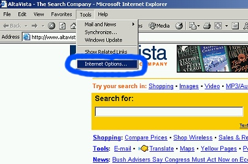
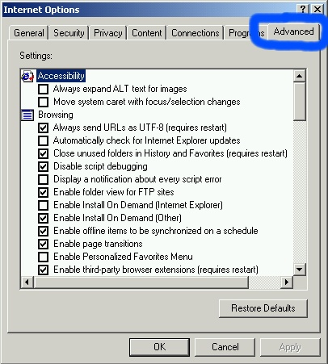
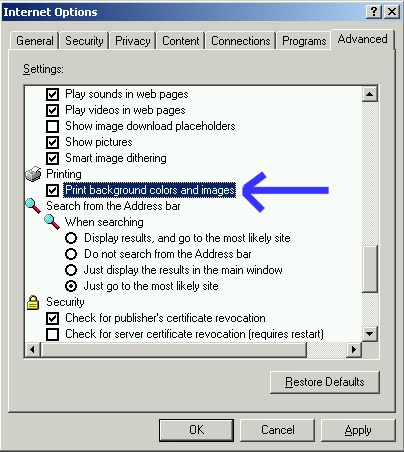

|
Color Printing
If you are having problems printing the schedule in color, try the
following
| 1.
In your Internet Explorer window, choose 'Tools'
from the menu bar and click 'Internet Options'. |
 |
| 2.
When the options menu comes up, click the 'Advanced'
tab. |
 |
| 3.
Scroll through the list of options, and check the box
that says "Print background colors and images". |
 |
|